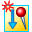
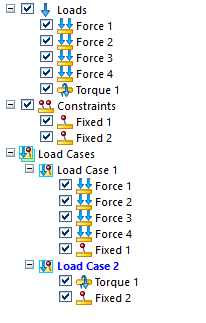
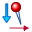
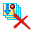

Using load cases
Every study must have at least one load case. When you create a study, the loads and constraints that you defined are displayed in the Generative Design pane as individual objects, as well as under a Load Cases node as Load Case 1.
If your part is likely to undergo different loading conditions during operation, consider using the Generative Design tab→Generative Study group→Create Load Case command

to add more load cases to structurally optimize your part. Load cases enable you to account for different stresses that are applied at different stages of use.The Create Load Case command is also available on the shortcut menu of the Load Cases node in the Generative Design pane.
Use load cases to mimic different operating conditions
Most parts are used under varying loads and varying boundary conditions. It is more realistic to specify as many of these different loads and boundary conditions as are known, so that the optimized part can work without breaking under any combination of conditions.
To achieve this in Generative Design, you can group load and constraint boundary conditions into load cases. This ensures they do not cancel each other out mathematically. You also can specify the order in which the different combinations of boundary conditions are to be applied to get a single result file.
When should you use load cases?
Here are some situations where you can use load cases.
A part can have opposing forces which may or may not be equal, such as:
-
Internal pressure and external pressure, like that in a pressure vessel or on a push-pull knob.
-
A lever that moves in two opposing directions.
A part can have opposing torques, which may or may not be equal. An example of this is a door knob that can be rotated clockwise or counterclockwise.
You are responsible for ensuring that the loads and constraints within any single load case do not contradict each other. This requirement does not apply across load cases.
Working with load cases
In addition to being listed as individual loads and individual constraints in the Generative Design pane, the load and constraint boundary conditions that you defined for your study are grouped together and added to the Load Cases node and labeled Load Case 1. The active load case is shown in blue, just like the study name.
When you select the Create Load Case command, an empty container, for example Load Case 2, is added to the Generative Design pane. You can click+drag an existing load or constraint to reuse it in the current load case, and you can create entirely new boundary conditions using the commands on the ribbon.

When you use multiple load cases, they can contain different combinations of the loads and constraints in the study. The only requirement is that every load case must have at least one load and one constraint.
Load cases are processed in the order that they appear in the Generative Design pane. By adding, removing, and reordering the load cases, you can mimic the anticipated real-life operating conditions.
Working in the Generative Design pane, you can:
-
Review the values and locations of individual loads by clicking the load name once.
Example:This model has four different force loads applied to it. Click each load name in the Generative Design pane to identify its location on the model, as well as its associated value.
 Tip:
Tip:You also can hover over a load name in the Generative Design pane to quickly show the load value in a data tip.
-
Activate a load case for editing by double-clicking the load case name.
-
Copy (click+drag) individual loads and constraints between load cases within the same study.
-
Drag the load cases to change the order in which they are applied during processing.
-
Use the Duplicate Load Case command on the shortcut menu of a load case to copy all of the load and constraint objects and values beneath it.
Note:You also can Ctrl+drag the load case node to duplicate it.
-
Test the effect of individual loads and constraints in a load case. Use the Suppress and Unsuppress commands on the shortcut menu of individual loads and constraints to temporarily prevent them from being considered during optimization.
-
Use the Remove From Load Case command

on the shortcut menu of a load or constraint to remove it from a load case without deleting it from the study. -
Use the Delete command on the shortcut menu of a load case to remove the load case plus its contents from processing. It does not delete the individual loads and constraints from the study.
-
Use the Delete All Load Cases command

on the shortcut menu of the Load Cases node to delete all of the load cases below it. This also creates a new Load Case 1, because a study must have at least one.